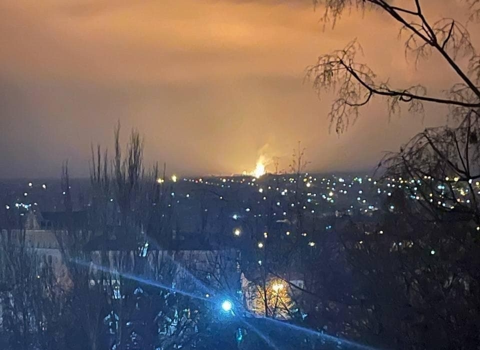
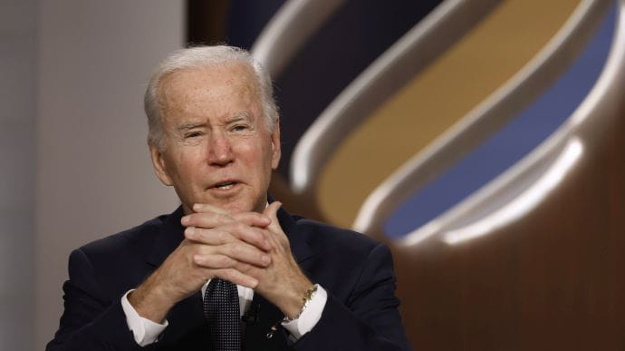
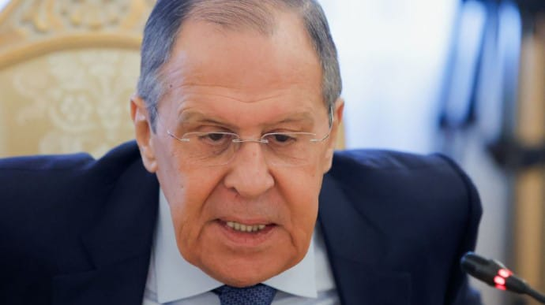
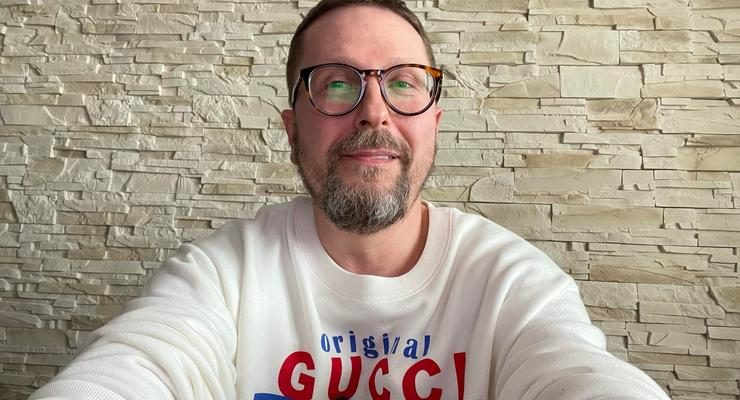

РосЗМІ та бойовики повідомили про вибух газопроводу в Луганську
Російські ЗМІ та бойовики повідомили, що в Луганську на непідконтрольній українській владі території стався вибух на газопроводі.
Джерело: російські видання "ТАСС", "РИА Новости", співрозмовник УП в Луганську
Деталі
Російські видання пишуть, що вибух стався в Луганську після чого загорівся трубопровід "Дружба".
Відзначимо, що відповідний трубопровід знаходиться далеко від території непідконтрольної Луганщини. Маршрут "Дружби" через Україну пролягає через центральні і західні області, а на кордоні розмежовується на два потоки "Дружба-1" у Словаччину і "Дружба-2" - Угорщину.
Пресслужба компанії на непідконтрольній території "Луганськгаз" повідомила, що пізно ввечері почали надходити дзвінки про велике загоряння на газопроводі в районі Малої Вергунки. Про подібний вибух у тому ж місці бойовики повідомляли рік тому.
Згодом "Луганськгаз" повідомив про ще один вибух і одразу ж назвав їх причиною "диверсію".
Факт вибуху УП підтвердили мешканці Луганську.
В ефірі програми "Свобода слова" п'ятий президент України Петро Порошенко заявив, що у Луганську горить трубопровід "Дружба" і це означає, що хтось його підпалив. За словами Порошенка, якщо інформація правдива, то це провокація, яку організовують на окупованій території.
Порошенко заявив, що пояснити ці провокації можуть двома варіантами: або ж президент РФ Володимир Путін намагається таким чином легітимізувати перед світом рішення про визнання незалежності ОРДЛО, або ж Росія під приводом "захисту" від провокацій запустить в ОРДЛО своїх військових.
Джерело: Українська правда
Байден: Я впевнений, що Путін ухвалив рішення про вторгнення в Україну
Президент США Джо Байден впевнений, що його російський колега вже ухвалив рішення про напад на Україну.
Джерело: брифінг Байдена
Деталі
Байден упевнений, що Путін ухвалив рішення щодо подальших кроків щодо України і рішення про вторгнення вже ухвалено.
Він вважає, що Росія може вторгнутися в Україну найближчими днями.
Журналісти перепитали Байдена, чи впевнений він, що Путін збирається напасти на Україну, він відповів - "Я абсолютно впевнений".
Коли в нього перепитали, чому настільки впевнений – той відповів, що США "неймовірна розвідка". Проте Байден додав, що "до початку нападу ще є шанси на дипломатію".
Президент США також додав, що немає доказів того, що Україна готує напад.
Байден також зазначив, що Росія поширює фейки, наприклад, про розстріл дитячого садка у Станиці Луганській.
Також американський лідер назвав "не дуже мудрим рішенням" поїздку президента Володимира Зеленського на Мюнхенську конференцію.
Джерело: Українська правда
Лавров почав говорити з Заходом на фені: "Пацан сказав - пацан зробив"
Міністр закордонних справ Росії Сергій Лавров закликав Захід до діалогу про безпеку "по поняттям", щоб було так - "пацан сказав - пацан зробив".
Джерело: інтерв'ю Лаврова пропагандистському телеканалу RT, яке цитує ТАСС
Деталі
"Будемо добиватися, щоб усе було чесно. Не хочу звертатися до жаргону, але у нас є поняття - "пацан сказав - пацан зробив". Принаймні, "поняття" повинні дотримуватися і на міжнародному рівні".
Деталі: Лавров заявив, що Москва домагатиметься, аби США та НАТО виконували "прийняті на себе зобов'язання" з безпеки та "надані Росії обіцянки" у зв'язку з цим.
"Повторю, ми зацікавлені в тому, щоб докладніше пояснити американським колегам і всім їхнім союзникам по НАТО, що не можемо задовольнитись обіцянками. Тим більше, що письмові зобов'язання глав держав та урядів, які вимагають від натовців враховувати наші інтереси повною мірою, не кажучи про усні гарантії, про які президент Росії Володимир Путін неодноразово згадував, виявляється, нічого не варті. Так справа не піде".
Джерело: Українська правда
Зеленський розширив санкції проти Шарія та головреда «Страни.ua»
Президент України Володимир Зеленський погодив рішення Ради національної безпеки й оборони, яке розширює санкції проти Анатолія Шарія та головреда проросійського видання «Страна.ua» Ігоря Гужви.
Про це йдеться у відповідному указі від 16 лютого.
Деталі
Так, тепер будуть блокувати доступ не лише до доменів сайтів «Страна.ua» та «Шарій.Нет», але й сайтів, аналогічних за змістом. Ідеться про сайти-«дзеркала», на яких після запровадження санкцій могли працювати заблоковані медіа.
Також Зеленський розширив санкції щодо «заступника генерального прокурора ЛНР» Вадима Лященка та ще трьох працівників окупаційної адміністрації на Донбасі.
Джерело: Hromadske
«Навіщо?»: у Кремлі відповіли на пропозиції зустрічі Зеленського та Путіна

Речник президента Росії Дмитро Пєсков заявив, що українська сторона неодноразово пропонувала організувати зустріч президентів Володимира Зеленського та Володимира Путіна, але у Кремлі не хочуть говорити про Донбас.
Про це пише ТАСС.
Деталі
Пєсков заявив, що Україна має говорити про окуповані території з «донбасцями».
«Ми неодноразово отримували сигнали від Києва з пропозицією зустрітися, але щоразу Київ не відповідав нам на просте запитання: навіщо, з якою метою. Ми говоримо: "Слухайте, давайте ви з донбасцями говоритимете про Донбас. У вас є до нас питання щодо інших тем?" Мовчать», ㅡ сказав речник Путіна.
Президент Володимир Зеленський під час спілкування з журналістами у Маріуполі вкотре заявив, що Україна подавала офіційні запити й намагалася зв'язатися з Путіним через скупчення російських військ біля українських кордонів.
Зеленський заявив, що готовий на будь-який формат переговорів, але Кремль, крім оприлюднення публічної позиції, не хоче спілкуватися.«Україну не залишають без відповіді, але ця відповідь не веде до зустрічі. Телефонну розмову також ніхто не підтверджує», ㅡ сказав Зеленський.
Джерело: Hromadske